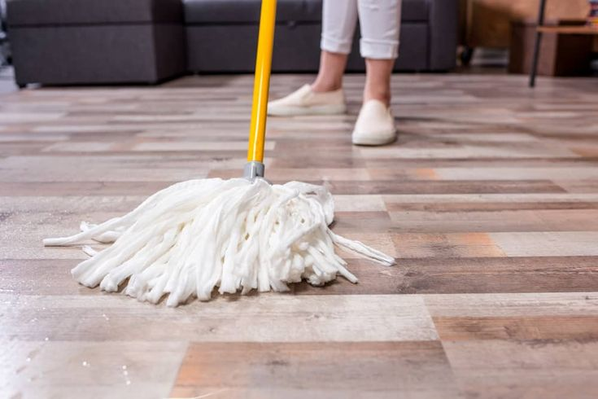
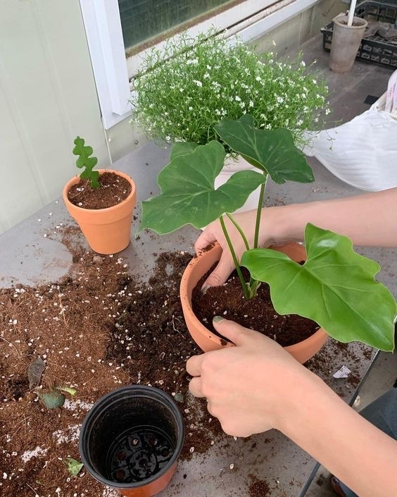
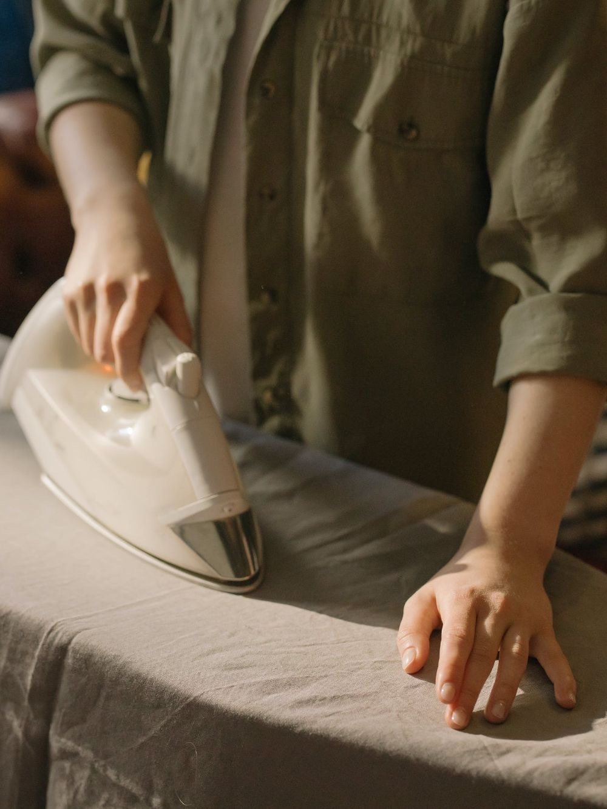

|  |
1. Mopping
- Keeps floors clean and fresh.
- Removes dust and pet hair, improving health.
- Creates a more comfortable and inviting space for everyone.
- Shows care for your home and helps parents.
|
 |
2. Cleaning the House and Organizing Things
- Makes it easy to find things and creates a calm space.
- A clean, organized space improves focus and productivity.
- Impresses guests and shows pride in your home.
- Saves parents time and effort.
|
 |
3. Taking Out the Trash
- Keeps your home smelling fresh and free of clutter.
- Prevents pests and bugs by removing food waste punctually.
- Recycling helps protect the environment.
|
|  |
4. Gardening
- Fun outdoor activity with fresh air and exercise.
- Satisfying to see plants grow and enjoy fresh produce.
- Improves physical fitness through tasks like digging and planting.
- Beautifies outdoor spaces, creating a relaxing environment.
|
 |
5. Cleaning Up After Meals
- Stops bacteria from spreading on unwashed dishes or surfaces.
- Shows respect for others and good habits.
- Makes life easier for parents.
|
 |
6. Helping with Cooking
- Develops essential life skills such as preparing meals and following recipes.
- Provides an opportunity to experiment with new ingredients and flavors.
- Helps you understand the effort behind meal preparation.
|
 |
7. Making the Bed
- A small habit that makes a big difference.
- Creates a tidy and visually pleasing bedroom.
- Pleases parents by keeping your space tidy.
|
 |
8. Doing the Laundry
- Keeps clothes clean and well-maintained.
- Teaches how to manage and care for different types of fabrics.
- Reduces parents’ workload.
|
|  |
9. Ironing
- Keeps clothes wrinkle-free and presentable.
- Helps develop patience and attention to small details.
- Save parents time.
|
 |
10. Taking Care of Pets
- Teaches responsibility and care for another living being.
- Helps you relax and bond with your pet.
- Helps you feel happier and less stressed.
|